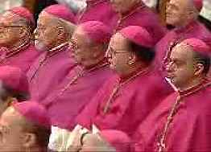
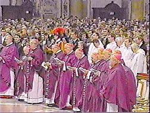

Rev 17:4 And the woman was arrayed in purple and
scarlet colour, and decked with gold and precious stones and pearls,
having a golden cup in her hand full of abominations and
filthiness of her fornication:
Rev 17:5 And upon her forehead was a name written, MYSTERY, BABYLON THE
GREAT, THE MOTHER OF HARLOTS AND ABOMINATIONS OF THE EARTH.
Rev 17:6 And I saw the woman drunken with the blood of the
saints, and with the blood of the martyrs of Jesus: and when I
saw her, I wondered with great admiration.
On March 12th, 2000, at the Vatican in Rome,
Pope John Paul II formally asked forgiveness for the various persecution sins
committed by the Catholic Church over the last two millennium. In his "Day of
Pardon" homily, the pope confessed:
"... we cannot fail to recognize the infidelities to the
Gospel committed by some of our brethren, especially during the second
millennium. Let us ask pardon for the divisions which have occurred among
Christians, for the violence some have used in the service of the truth and
for the distrustful and hostile attitudes sometimes taken towards the
followers of other religions."
The Pope had previously admitted that
Catholic:
"... acquiescence given to intolerance and even the use of
violence in the service of truth (cf.
Tertio Millennio Adveniente, n. 35). Although many acted here in
good faith, it was certainly not evangelical to think that the truth should
be imposed by force. Then there is the lack of discernment by many
Christians in situations where basic human rights were violated."
Source:
Audience in the Vatican, Paul VI Hall, Wednesday, Sept. 1st, 1999.
These assert that Catholics erred only in their zealousness to
forcefully impose the truth on heretics. It seems the Pope overlooks
the fact that Protestants broke away from Catholicism after concluding that it
had fallen away from the truth. Access to vernacular Bibles coming
from Protestant printing presses exposed the blatant apostasy of the Roman
Catholic Church to the Protestant reformers, and they all came to the
conclusion that Rome was Mystery Babylon, the apostate church, which scripture
also plainly identifies as a bloody persecutor, dressed in purple and scarlet.
|

|
 |
|
Prominent cardinals directly participating in the
unprecedented papal apology ceremony on March 12th wore both
prophesied colors of purple and scarlet. The Pope (shown above) and his
Bishops, wore various shades of purple, as that is the specified color
to be worn during Lent, as is symbolizes penitence. |

Above Images © 2000 by CTV
|
|
On the right is Cardinal Joseph Ratzinger, Prefect of
the Congregation for the Doctrine of the Faith, previously known as the
Office of the Inquisition. Cardinal Ratzinger read the introduction for
the prayer for the CONFESSION OF SINS COMMITTED IN THE
SERVICE OF TRUTH:
"Let us pray that each one of us, looking to the Lord
Jesus, meek and humble of heart, will recognize that even men of the
Church, in the name of faith and morals, have sometimes used methods
not in keeping with the Gospel in the solemn duty of defending the
truth."
|
|
|
Cardinal Joseph Ratzinger
© 2000 by CTV |
The apostate woman (church) of Revelation 17, who wears purple
and scarlet, is clearly located geographically in scripture:
Rev 17:9 And here is the mind which hath wisdom. The seven
heads are seven mountains, on which the woman sitteth.
Rev 17:15 And he saith unto me, The waters which thou sawest,
where the whore sitteth, are peoples, and multitudes, and nations, and
tongues.
Rev 17:18 And the woman which thou sawest is that great
city, which reigneth over the kings of the earth.
The apostate persecuting church, the mother of harlots, "sits"
or rules from the seven-hilled city of Rome, and claims to rule "universally"
(Catholic) over all the kings and people of the world. That Pope John Paul II
now acknowledges Catholic guilt, and wants to ask forgiveness for all the
blood the Catholic Church has shed, only serves to further confirm her
identity as Mystery Babylon, and scripture says the following regarding her:
Rev 18:2 And he cried mightily with a strong voice, saying,
Babylon the great is fallen, is fallen, and is become the habitation of
devils, and the hold of every foul spirit, and a cage of every unclean and
hateful bird.
Rev 18:3 For all nations have drunk of the wine of the wrath of her
fornication, and the kings of the earth have committed fornication with her,
and the merchants of the earth are waxed rich through the abundance of her
delicacies.
Rev 18:4 And I heard another voice from heaven, saying, Come out of her, my
people, that ye be not partakers of her sins, and that ye receive not of her
plagues.
Rev 18:5 For her sins have reached unto heaven, and God hath remembered
her iniquities.
Rev 18:6 Reward her even as she rewarded you, and double unto her double
according to her works: in the cup which she hath filled fill to her double.
The truth is that Pope John Paul II is not responsible for the
blood shed by Catholics of the past, and he cannot be granted forgiveness for
the sins committed by his church. Those who committed the acts of persecution
and oppression will be responsible for them, and if they did not seek
forgiveness and repent of their sins, then they will suffer for them in the
judgment. As Revelation 18 makes clear, God's people are asked to come out of
the apostasy of Catholicism, and embrace the biblical truths of scripture
before she is judged for her apostasy and iniquities. The Pope, by seeking
forgiveness for past Catholic atrocities, is merely admitting that the blood
of thousands of uncounted innocents is indeed on her hands, just as scripture
charges.
|
Rome's Apologies Predicted 116 Years Ago!
The Romish Church now presents a
fair front to the world, covering with apologies her record of
horrible cruelties. She has clothed herself in Christ like garments;
but she is unchanged. Every principle of popery that existed in ages
past exists to-day. The doctrines devised in the darkest ages are
still held. Let none deceive themselves. The popery that Protestants
are now so ready to embrace and honor is the same that ruled the world
in the days of the Reformation, when men of God stood up at the peril
of their lives to expose her iniquity. She possesses the same pride
and arrogant assumption [pg. 388] that lorded it over kings and
princes, and claimed the prerogatives of God. Her spirit is no less
cruel and despotic now than when she crushed out human liberty, and
slew the saints of the Most High.
Popery is just what prophecy declared that she would be,--the
apostasy of the latter times. It is a part of her policy to assume the
character which will best accomplish her purpose; but beneath the
variable appearance of the chameleon, she conceals the invariable
venom of the serpent. "We are not bound to keep faith and promises to
heretics," she declares. Shall this power, whose record for a thousand
years is written in the blood of the saints, be now acknowledged as a
part of the church of Christ?
It is not without reason that the claim has been put forth
that Catholicism is now almost like Protestantism. There has been a
change; but the change is in Protestants, not in Romanists.
Catholicism indeed resembles the Protestantism that now exists; but it
is far removed from Protestantism as it was in the days of Cranmer,
Ridley, Knox, and other reformers.
As the Protestant churches have been seeking the favor of the
world, false charity has blinded their eyes. They do not see but that
it is right to believe good of all evil; and as the inevitable result,
they will finally believe evil of all good. Instead of standing in
defense of the faith once delivered to the saints, they are now, as it
were, apologizing to Rome for their uncharitable opinion of her,
begging pardon for their bigotry.
A large class, even of those who look upon Romanism with no
favor, apprehend little danger from her [pg. 389] power and influence.
Many urge that the intellectual and moral darkness prevailing during
the Middle Ages favored the spread of her dogmas, superstitions, and
oppression, and that the greater intelligence of modern times, the
general diffusion of knowledge, and the increasing liberality in
matters of religion, forbid a revival of intolerance and tyranny. The
very thought that such a state of things will exist in this
enlightened age is ridiculed. It is true that great light,
intellectual, moral, and religious, is shining upon this generation.
In the open pages of God's holy word, light from Heaven has been shed
upon the world. But it should be remembered that the greater the light
bestowed, the greater the darkness of those who pervert or reject it.
A prayerful study of the Bible would show Protestants the
real character of the papacy, and would cause them to abhor and to
shun it; but men are so wise in their own conceit that they feel no
need of humbly seeking God that they may be led into the truth.
Although priding themselves on their enlightenment, they are ignorant
both of the Scriptures and of the power of God. They must have some
means of quieting their consciences; and they seek that which is least
spiritual and humiliating. What they desire is a method of forgetting
God which shall pass as a method of remembering him. The papacy is
well adapted to meet the wants of all these. It is prepared for two
classes of mankind, embracing nearly the whole world,--those who would
be saved by their merits, and those who would be saved in their sins.
Here is the secret of its power. [pg. 390]
A day of great intellectual darkness has been shown to be
favorable to the success of popery. It will yet be demonstrated that a
day of great intellectual light is equally favorable for its success.
In past ages, when men were without God's word, and without the
knowledge of the truth, their eyes were blindfolded, and thousands
were ensnared, not seeing the net spread for their feet. In this
generation there are many whose eyes become dazzled by the glare of
human speculations, "science falsely so called;" they discern not the
net, and walk into it as readily as if blindfolded. God designed that
man's intellectual powers should be held as a gift from his Maker, and
employed in the service of truth and righteousness; but when they are
idolized, and laid upon the shrine of Satan to be employed in the
service of a false religion, then intelligence can accomplish greater
harm than ignorance.
In the movements now in progress in this country to secure
for the institutions and usages of the church the support of the
State, Protestants are following in the steps of papists. Nay, more,
they are opening the door for popery to regain in Protestant America
the supremacy which she has lost in the Old World. And that which
gives greater significance to this movement is the fact that the
principal object contemplated is the enforcement of Sunday observance,
--a custom which originated with Rome, and which she claims as the
sign of her authority.
Source: Spirit of Prophecy, Volume 4, by Ellen
G. White, published in 1884, pages 387-390. Also found in Great
Controversy, published in 1911, pages 571-573.
|
See the following articles about this topic:
At the BBC:
Letter from America, by Alistair Cooke:
The most significant event of recent times.
At Religion Today:
Catholic and Pentecostal leaders confessed sins and asked forgiveness from
each other.
At CWN (Catholic World News)
Pope Apologizes For The Death Of Jan Hus
Vatican
Preparing Document on Past Faults
Theologians Ponder Church Appeals For Pardon
POPE SPEAKS ON CHURCH'S NEED FOR PARDON
At ZENIT:
THE CATHOLIC CHURCH'S "MEA CULPA"
WHY DOES THE CHURCH ASK PARDON FOR PAST SINS?
World
Reacts to Papal Request for Pardon


{kind=link}
{kind=link}
{kind=link}
{kind=link}
{kind=link}
{kind=link}